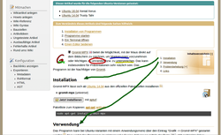

Gromit-MPX
Dieser Artikel wurde für die folgenden Ubuntu-Versionen getestet:
Ubuntu 16.04 Xenial Xerus
Ubuntu 14.04 Trusty Tahr
Zum Verständnis dieses Artikels sind folgende Seiten hilfreich:
Gromit-MPX  bietet die Möglichkeit, mit der Maus direkt auf dem Bildschirm zu zeichnen, um Markierungen vorzunehmen oder Wichtiges zu umranden bzw. zu unterstreichen. Das kann insbesondere für Präsentationen (statt eines Laserpointers) sehr nützlich sein. Das Programm ist eine Weiterentwicklung von Gromit.
bietet die Möglichkeit, mit der Maus direkt auf dem Bildschirm zu zeichnen, um Markierungen vorzunehmen oder Wichtiges zu umranden bzw. zu unterstreichen. Das kann insbesondere für Präsentationen (statt eines Laserpointers) sehr nützlich sein. Das Programm ist eine Weiterentwicklung von Gromit.
Mögliche Alternativen sind beispielsweise die Compiz-Funktion "Auf den Bildschirm zeichnen" für die Desktop-Oberfläche Unity, die über CompizConfig (CCSM) aktiviert werden kann. Externe Programme sind dagegen Ardesia (in den offiziellen Paketquellen enthalten) und Pylote  . Der Hauptunterschied zwischen den beiden genannten Programmen ist, dass Pylote keinen Composite-Manager benötigt.
. Der Hauptunterschied zwischen den beiden genannten Programmen ist, dass Pylote keinen Composite-Manager benötigt.
Installation¶
 Gromit-MPX lässt sich ab Ubuntu 14.04 aus den offiziellen Paketquellen installieren [1]:
Gromit-MPX lässt sich ab Ubuntu 14.04 aus den offiziellen Paketquellen installieren [1]:
gromit-mpx (universe)
 mit apturl
mit apturl
Paketliste zum Kopieren:
sudo apt-get install gromit-mpx
sudo aptitude install gromit-mpx
Verwendung¶

Das Programm kann bei Ubuntu-Varianten mit einem Anwendungsmenü über den Eintrag "Grafik -> Gromit-MPX" gestartet werden [2]. Nun wartet das Programm im Hintergrund auf seine Aktivierung mittels der Taste
Pause . Mit gedrückter linker Maustaste  kann man dann mit einem roten Stift auf dem Bildschirm "zeichnen". Die Taste
F10 dient zum Rückgängigmachen bzw. löschen. Sämtliche Markierungen können mit der Tastenkombination
⇧ +
Pause komplett wieder gelöscht werden. Erneutes Drücken der Taste
Pause schickt das Programm zurück in den Wartemodus.
kann man dann mit einem roten Stift auf dem Bildschirm "zeichnen". Die Taste
F10 dient zum Rückgängigmachen bzw. löschen. Sämtliche Markierungen können mit der Tastenkombination
⇧ +
Pause komplett wieder gelöscht werden. Erneutes Drücken der Taste
Pause schickt das Programm zurück in den Wartemodus.
| Steuerung (Standardbelegung) | |
| Taste(n) | Beschreibung |
| Pause | Aktivieren bzw. deaktivieren |
| ⇧ + Pause | Alle Anmerkungen werden gelöscht |
| Strg + Pause | Alle Anmerkungen werden ausgeblendet und Gromit-MPX deaktiviert. Die erneute Betätigung der Tastenkombination aktiviert das Programm wieder und blendet alle Anmerkungen ein. |
| Alt + Pause | Das Programm beenden |
| | Roter Stift |
|
Strg + | Gelber Stift |
|
⇧ + | Blauer Stift |
 | Grüner Stift (mit Pfeilspitze) |
 | Radierer |
Zum Beenden des Programms dient der Befehl:
gromit-mpx --quit
Alternativ kann man das Panel-Symbol mit der rechten Maustaste anklicken (das Programm bitte vorher deaktivieren).
Optionen¶
Gromit-MPX kann mit Optionen aufgerufen werden. Dabei gibt es zwei unterschiedliche Klassen: Optionen, die dem Programm direkt beim Start mitgegeben werden und Optionen, mit denen das laufende Programm gesteuert werden kann. Letztere sind für den Aufruf aus anderen Programmen oder Skripten heraus besonders praktisch.
| Start-Optionen (Auswahl) | ||
| Kurzform | Langform | Beschreibung |
-a | --active | startet Gromit-MPX aktiviert |
-k TASTE | --key TASTE | Legt eine andere Taste zum Einfangen der Maus fest. TASTE ist eine Bezeichnung wie "Pause", "F12", "Control_R" oder "Print". Diese Namen können mit dem Befehl xev ermittelt werden. |
-u TASTE | --undo-key TASTE | Legt eine andere Taste zum Rückgängigmachen fest |
| Programm-Optionen (Auswahl) | ||
| Kurzform | Langform | Beschreibung |
-q | --quit | Gromit beenden |
-t | --toggle | Zwischen den Modi aktiv und inaktiv umschalten |
-v | --visibility | Sichtbarkeit der Anmerkungen umschalten |
-c | --clear | Anmerkungen komplett löschen |
Weitere Optionen können der Manpage entnommen werden. Ein Beispiel [3]:
gromit-mpx --key F12 --undo-key F11
Konfiguration¶
Systemweite Einstellungen sind in der Datei /etc/gromit-mpx/gromit-mpx.cfg definiert. Diese Datei kann kopiert werden, um eine eigene Konfiguration unter ~/.config/gromit-mpx.cfg im Homeverzeichnis anzulegen:
cp /etc/gromit-mpx/gromit-mpx.cfg ~/.config/gromit-mpx.cfg
Anschließend bearbeitet man die Kopie mit einem Editor [4]. So können Strichstärken, Schriftfarben sowie die Größe des Radierers festgelegt werden. Beispiel:
# Default gromit-mpx configuration "red Pen" = PEN (size=5 color="red"); "blue Pen" = "red Pen" (color="blue"); "yellow Pen" = "red Pen" (color="yellow"); "green Marker" = PEN (size=6 color="green" arrowsize=1); "Eraser" = ERASER (size = 75); "default" = "red Pen"; "default"[SHIFT] = "blue Pen"; "default"[CONTROL] = "yellow Pen"; "default"[2] = "green Marker"; "default"[Button3] = "Eraser";
Problembehebung¶
Panel-Symbol¶
Unter Unity und GNOME 3 fehlt das Panel-Symbol. Die praktische Nutzung über Tastenkombinationen ist dadurch aber nicht beeinträchtigt.
Composite-Manager¶
Prinzipiell sollte es keine Rolle spielen, ob man die grafische Oberfläche mit oder ohne Desktop-Effekte bzw. Composite-Manager betreibt. Praktisch ist aber ohne Composite-Manager eine deutliche Verzögerung spürbar, je mehr Anmerkungen auf dem Bildschirm existieren. Das Installieren eines Composite-Managers bzw. das Aktivieren der Desktop-Effekte behebt das Problem.
 Übersichtsartikel
Übersichtsartikel- Erstellt mit Inyoka
-
 2004 – 2017 ubuntuusers.de • Einige Rechte vorbehalten
2004 – 2017 ubuntuusers.de • Einige Rechte vorbehalten
Lizenz • Kontakt • Datenschutz • Impressum • Serverstatus -
Serverhousing gespendet von